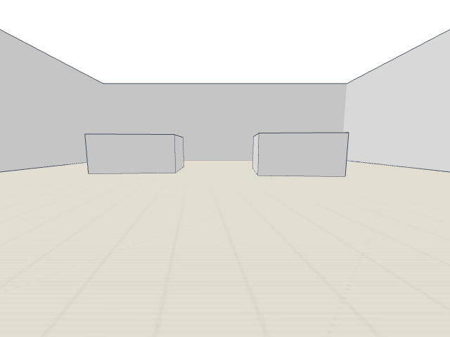
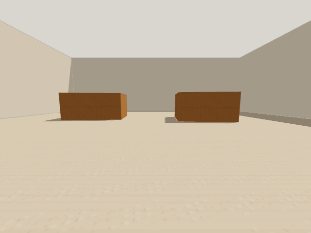
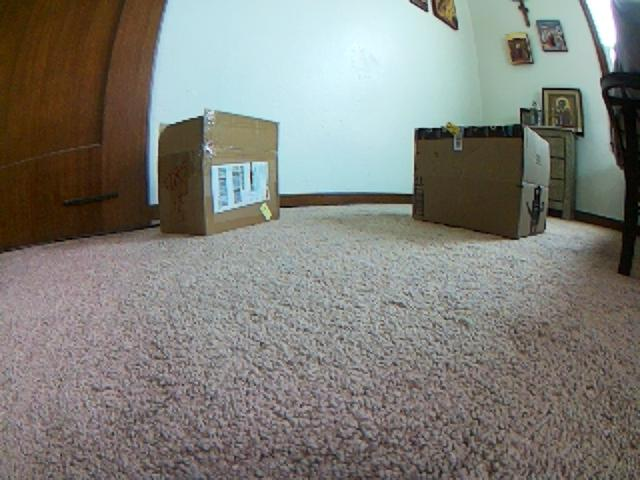
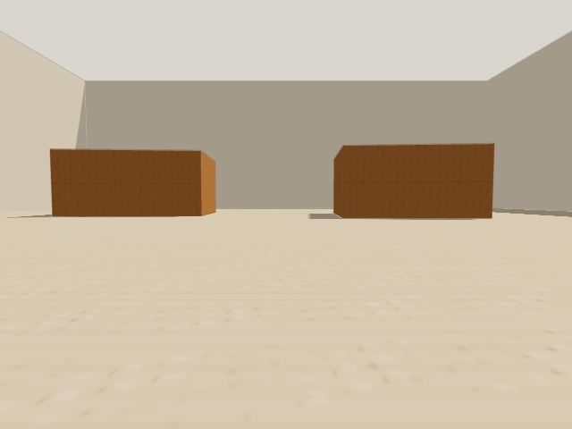
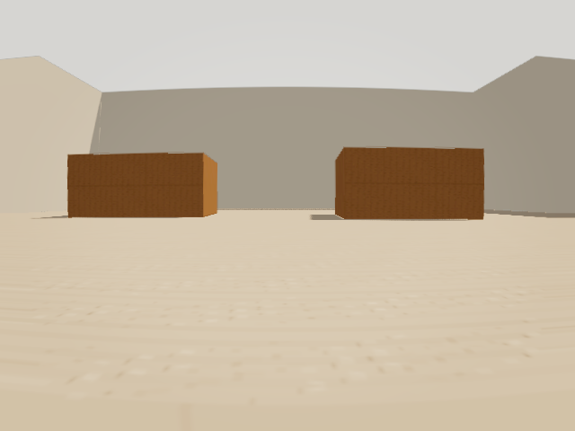
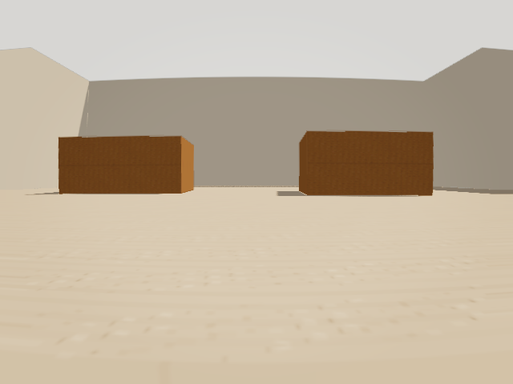
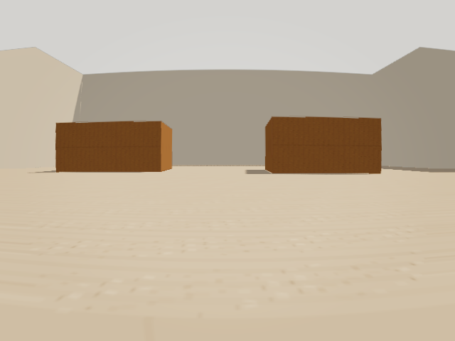

Milestone 001: RC Camera Simulation Realism
Make Chase front-view images approximate a camera mounted on an indoor RC vehicle while preserving deterministic simulation rendering for debugging, regression, and geometry inspection.
High-Level Objective
Physical Appearance
Represent carpet, cardboard obstacles, room lighting, shadows, and bounded surface variation through explicit scenario rendering data.
Camera Parity
Model camera mount geometry, lens characteristics, and selected sensor artifacts without changing perception geometry or vehicle dynamics.
Controlled Realism
Apply one normalized profile to the app view, popout, and WS snapshots while retaining a stable simulation profile and reproducible seeds.
Success is not photorealism. Success is a reproducible observation environment whose differences from the physical PiRacer camera are explicit, configurable, and measurable from frame-matched evidence.
Completion Usage
These are proposed interfaces unless identified as available. Exact names may sharpen, but changing the workflow set requires a decision-log entry.
Select A Rendering Profile
Starting state: Chase is loaded with a scenario.
Available execution: select Simulation, RC indoor, or Randomized from the Game settings and reset the scenario.
Success signal: the main scene and actor view use the selected profile, and reset retains the session override while restoring world state.
Declare Scenario Appearance
Starting state: a Chase scenario definition is being authored.
Available execution:
rendering: {
profile: "rc-indoor",
seed: 42
}
Success signal: scenario resolution reports one validated effective profile and all render entry points consume it.
Capture Reproducible Front-View Evidence
Starting state: the frontend is running and the desired scenario, profile, and actor pose are selected.
Available execution:
simeval ui play-front-view-snapshot \ --actor chaser \ --out-dir /tmp/chase-realism
Success signal: the PNG and metadata identify the frame, scenario, resolved profile, seed, camera parameters, and image-effect parameters; repeating the same state and seed reproduces the resolved values and passes a documented same-renderer pixel tolerance.
Compare Simulation With A Physical Frame
Starting state: a physical PiRacer reference image and corresponding Chase scenario are available.
Proposed execution: capture the fixed scenario under simulation and rc-indoor, then record both beside the source image.
Success signal: one review artifact pairs all images with resolved parameters and states what improved, regressed, or remains unmodeled.
Baseline
| Area | Observed State | Gap |
|---|---|---|
| Floor | floor.mjs creates one procedural light floor texture and an independently toggleable grid. | Scenarios cannot identify carpet or select material parameters. |
| Obstacles | Walls support position, dimensions, rotation, and height. All use one white standard material with dark geometry edges. | Cardboard boxes and room walls cannot carry distinct appearance. |
| Lighting | scene-view.mjs uses fixed high-intensity ambient and directional lights. | There is no lighting profile, calibrated exposure, or functioning cast-shadow path. |
| Camera | Front views use perspective FOV and range from vehicle settings with fixed mount assumptions. | Mount height, pitch, yaw, lens distortion, and sensor response are not explicit configuration. |
| Capture | App, popout, and WS snapshots render the shared world; snapshots omit debug projections by default and reuse WebGL capture resources. | Capture metadata does not identify a rendering profile or calibration. |
| Evidence | piracer-room-sketch approximates a physical two-box room geometry. | No repeatable side-by-side artifact evaluates simulated appearance against its source frame. |
Current Delivery Horizon
This milestone follows the shared planning contract. Only the current and queued review units are concrete.
Shared Planning And Delivery ContractGlobal
Rendered from the canonical Markdown source. Regenerate it rather than editing the embedded document.
Closed: RC Camera Simulation Realism
Validated and frozen Delivered: named deterministic and RC-indoor profiles, explicit camera and sensor contracts, bounded seeded variation, and reproducible front-view evidence.
Validation: 72 Chase regressions passed; the final simulation p95 was 5.3 ms versus 5.6 ms on the same pre-milestone revision and host; 25 sequential captures completed without blank output.
Record: closeout.md and validation.json.
Successor: Atomic Chase Evaluation Capture
Planned separately Direction: expose one camera frame and bounded evaluator shadow from the same simulation state before interpreting the image.
Boundary: retain the completed renderer as an evidence producer; do not leak map geometry or evaluator data into an external controller's sensor path.
Active plan: Milestone 002. Chaser observation interpretation follows as Milestone 003.
| Preparation Horizon | Known End-State Need | Must Be Learned First |
|---|---|---|
| Material and light profile | Carpet, cardboard, room walls, directional lighting, and shadows. | Which properties belong to named materials versus scenario overrides. |
| Camera calibration | Mount height, pitch, yaw, FOV, near/far range, and image dimensions. | Which values can be measured from the PiRacer and which remain scenario-dependent. |
| Optics and sensor | Lens distortion, exposure, vignette, blur, noise, and compression. | Which effects produce measurable parity rather than cosmetic complexity. |
| Domain variation | Seeded bounded variation for lighting, materials, and image response. | Which calibrated center values and ranges are defensible from physical evidence. |
| Closeout evidence | Repeatable images, metadata, performance, and physical comparison. | Which profile improves VLM-relevant observations without obscuring geometry. |
Current Evidence: Materials, Lighting, And Shadows
Both captures use piracer-room-sketch, chaser frame 0, a 640 by 480 image, and the same pose and geometry. Only the resolved rendering profile changes.


| Signal | simulation | rc-indoor |
|---|---|---|
| Floor | simulation-floor, roughness 0.94 | carpet-light, roughness 0.98 |
| Obstacles | white, untextured | cardboard-kraft, roughness 0.88 |
| Room walls | same material as obstacles | independent matte off-white material |
| Lighting | white ambient 1.8, white key 1.2 | warm ambient 0.9, warm key 2.4 |
| Output | no tone mapping; shadows disabled | ACES exposure 1.15; 1024px soft shadow map |
Runtime check: isolated 600-sample windows at 60 FPS, after a 12-second profile settling period, measured p95 total/render time of 2/1 ms for both profiles, below the 24 ms warning threshold. Twenty-five sequential 320 by 240 RC-indoor WS captures completed through the reusable renderer without a reported lost context or blank result.
Capture hashes and reproduction details are recorded in comparison.json.
Current Evidence: Camera Mount And Projection
The physical reference and both simulator captures are 640 by 480. The simulator captures retain the same initial chaser pose in piracer-room-sketch; their frame counters differ because empty runtime frames continue during capture setup.


| Signal | simulation | rc-indoor |
|---|---|---|
| Mount height | 0.42 units | 0.16 units |
| Pitch / yaw | 6.65 degrees down / 0 degrees | 2.8 degrees down / 0 degrees |
| Projection source | current perception FOV | calibrated profile FOV |
| Horizontal FOV | 102.38 degrees at this scenario pose | 86 degrees |
| Near / far clipping | 0.04 / 14 units | 0.04 / 14 units |
Calibration decision: the companion PiRacer script records 62.2 by 48.8 degrees as a default FOV prior, not a measured intrinsic. That narrow pinhole crop pushed both simulated boxes against the image edges. The physical frame's composition selected an 86-degree horizontal pinhole equivalent instead; the unmodeled barrel distortion remains an explicit next-package question.
The physical source, baseline simulator image, exact hashes, resolved metadata, remaining gaps, and reproduction commands are recorded in comparison.json. The simulation baseline capture remains available for direct comparison.
{kind=link}
Current Evidence: Optical And Sensor Effects
Both views use piracer-room-sketch, the same fixed initial chaser pose, the calibrated RC indoor camera, and a 640 by 480 PNG. The right image is frame 0 and adds only the resolved radial-vignette sensor pass; the earlier pinhole evidence advanced empty runtime frames during setup.

| Effect | Decision | Reason |
|---|---|---|
| Radial barrel distortion | Retain, fixed coefficient 0.12. | The physical frame has visible wide-angle edge expansion; this bounded transform adds that character without changing the simulation camera or world geometry. |
| Vignette | Retain, fixed strength 0.10. | A low-strength edge falloff separates the image boundary from the bright room without obscuring boxes or floor texture. |
| Blur, grain, compression | Reject for this package. | The one available reference cannot distinguish physical optics from motion, exposure, or JPEG artifacts. Adding them would lower geometric evidence quality without a defensible calibration. |
The resolved values, image hashes, repeated-capture result, and reproduction commands are recorded in comparison.json.
Current Evidence: Seeded Domain Variation
Both captures use piracer-room-sketch, chaser frame 0, the same calibrated camera geometry, and the randomized profile. A seed changes only bounded visual values; the fixed rc-indoor profile remains the physical-comparison center.


| Resolved concern | Bounded range | Invariant |
|---|---|---|
| ACES exposure | 1.05 to 1.25 | RC-indoor tone mapping and named materials remain selected. |
| Ambient / key light intensity | 0.78 to 1.02 / 2.15 to 2.65 | Light colors, positions, and targets remain calibrated. |
| Shadow radius | 1.6 to 2.4 | Shadow enablement, map size, bias, and room geometry remain fixed. |
| Floor / obstacle roughness | 0.94 to 0.995 / 0.82 to 0.94 | Carpet and cardboard texture identity and repeat remain fixed. |
| Barrel distortion / vignette | 0.08 to 0.16 / 0.06 to 0.14 | Camera mount, FOV, clipping, field-of-view perception, and world state remain fixed. |
Determinism decision: the Game section exposes a rendering seed, and the generic Play CLI exposes the same action. Repeating seed 17 at the fixed frame produced the same PNG hash. Seeded artifacts broaden visual training or inspection inputs around the calibrated center; they are not separately asserted to be new physical calibrations.
Resolved values, hashes, seed commands, and the fixed physical-reference relationship are recorded in comparison.json.
Rendering Contract
interface ChaseRenderingProfile {
id: "simulation" | "rc-indoor" | "randomized";
environment: RendererOutputOptions & LightingOptions & MaterialOptions;
camera: CameraMountOptions & CameraOpticsOptions;
sensor: SensorImageOptions;
seed?: number;
}
| Concern | Required Direction |
|---|---|
| Ownership | Scenario and session inputs normalize once; renderer modules consume resolved values and do not choose profiles. |
| Consistency | The app scene, popout, and snapshot path receive the same effective profile for a frame. |
| Separation | Visual realism does not change collision geometry, surface friction, field-of-view perception, or action behavior. |
| Determinism | Every randomized value derives from an explicit seed and is included in capture metadata. |
| Inspection | Snapshots record resolved parameters rather than only a preset name. |
| Debugging | The simulation profile remains stable, and debug overlays remain absent from front-view captures by default. |
| Resources | Materials, textures, render targets, and WebGL resources have explicit reuse and disposal ownership. |
Closeout Evidence
Final validation uses the same piracer-room-sketch scenario, 60 FPS setting, temporary local Chrome profile, and SimEval control workflow for historical and final comparison.
| Check | Observed result |
|---|---|
| Pre-milestone simulation p95 | 5.6 ms total at commit 404bacd. |
| Final simulation / RC-indoor p95 | 5.3 / 5.3 ms total. The final simulation profile is 5.4% faster than the comparable historical result. |
| Final randomized seed 17 p95 | 6.6 ms total, below the 24 ms visual threshold; visual variation has a measured cost and is opt-in. |
| Capture stress | 25 sequential 320 by 240 RC-derived captures produced 25 PNGs and 25 metadata files, with no empty output or failed command. First and last PNG hashes matched for the static pose. |
| Deterministic replay | Two reset-based 640 by 480 seed-17 snapshots at frame 3 had equal pose, profile, sensor metadata, and SHA-256. |
| Regression and type safety | 72/72 Chase regressions, Chase typecheck, TypeScript, milestone documentation, JSON, and whitespace checks passed. |
Environment note: automated Chrome had approximately 34 ms RAF gaps and catch-up stepping across both revisions. No profile reported an over-visual-budget or slow-tick count; the comparison uses p95 total work on the same machine and browser setup.
Commands, revisions, exact hashes, profile samples, and limitations are recorded in validation.json. The full delivered and unresolved-work record is closeout.md.
Work Plan
1. Establish Milestone Tracking And ScopeDone
PR #134 creates the planning contract, active plan, completion workflows, validation, and documentation discovery. Complete when the review accepts the milestone boundary and repository checks enforce the plan.
2. Settle Rendering Profile Values And OwnershipDone
PR #135 defines normalized scenario and session values, immutable renderer input, profile selection, metadata shape, and fallback behavior without changing baseline output.
3. Implement Materials, Lighting, And ShadowsDone
PR #136 adds named carpet, cardboard, and room-wall appearance plus explicit indoor lights and shadows through shared factories. Preserve the simulation profile exactly; physical calibration remains a later evidence task.
4. Calibrate Camera Mount And ProjectionDone
PR #137 makes mount height, pitch, yaw, FOV, image dimensions, and clipping behavior explicit. It resolves the same numeric values for live actor views and captures, retains them in WS snapshot metadata, and confirms that perception geometry remains separate.
5. Qualify Optical And Sensor EffectsDone
PR #138 evaluates lens distortion, exposure, vignette, blur, noise, and compression independently. It retains only fixed radial barrel distortion and vignette in a reusable actor-view pass; blur, grain, and compression remain rejected pending stronger physical evidence.
6. Add Seeded Variation And Comparison EvidenceDone
PR #139 defines bounded RC-indoor variation ranges, deterministic Game and CLI seed behavior, fully resolved snapshot metadata, and fixed-pose PiRacer room artifacts. The calibrated RC-indoor profile remains the physical-comparison center.
7. Validate, Document, And CloseDone
Closeout validation records the exact historical performance comparison, 25-capture stress result, reset-based deterministic replay, physical comparison artifacts, and full regression evidence. This frozen plan is summarized in closeout.md and the completed ledger.
Progress counts completed work packages, not commits or pull requests.
Scope Boundaries
In Scope
- Named rendering profiles and scenario/session overrides.
- Floor, wall, obstacle, and surface visual materials.
- Indoor lighting, shadows, exposure, and color response.
- Camera mount, projection, lens, and bounded image effects.
- Seeded domain variation and resolved capture metadata.
- UI selection, snapshot consistency, and physical comparison evidence.
Out Of Scope
- Acceleration, wheel slip, steering latency, or other drivetrain physics.
- Changes to collision, friction, perception, memory, or decision behavior.
- VLM integration, semantic recognition, or model training.
- High-poly vehicle or room reconstruction.
- Ray tracing or an unbounded photorealism goal.
- Randomness without explicit seed and parameter reporting.
Risks And Controls
| Risk | Control |
|---|---|
| Realism makes geometry harder to debug. | Keep the current simulation profile first-class and independently selectable. |
| Main, popout, and snapshot views diverge. | Normalize one profile and share material, light, camera, and postprocessing construction. |
| Postprocessing recreates the WebGL resource leak. | Reuse bounded render targets and explicitly test repeated capture and disposal. |
| Randomization makes failures irreproducible. | Require a seed and record every resolved value in snapshot metadata. |
| Visual effects are aesthetic but not physically useful. | Promote effects only with side-by-side physical evidence and a stated observation benefit. |
| Realistic rendering changes simulation behavior. | Keep visual profiles outside world geometry, collision, friction, perception, and action contracts. |
| Rendering cost degrades interactive control. | Record a baseline and require normal simulation frame time to remain within 10% of it. |
Exit Criteria
- Scenario and session configuration resolve into one documented rendering profile consumed by the app view, popout, and snapshot path.
- The deterministic
simulationprofile preserves current geometry-focused rendering and remains the default. - The
rc-indoorprofile visibly distinguishes carpet, cardboard obstacles, room walls, directional lighting, and shadows. - Camera mount, projection, lens, and retained sensor effects are explicit configuration rather than hidden constants.
- Every randomized value is seeded, reproducible, and present in snapshot metadata.
- WS and SimEval snapshots remain free of debug overlays by default and identify the effective scenario, frame, profile, camera, and sensor values.
- Repeated front-view capture produces no lost WebGL contexts or unbounded GPU-resource growth.
- The simulation profile's measured interactive frame time regresses by no more than 10% from the pre-milestone baseline.
- A fixed PiRacer room artifact compares the physical frame, simulation profile, and RC-indoor profile with parameters and stated remaining gaps.
- Regression tests cover profile normalization, view consistency, deterministic seeds, metadata, resource lifecycle, and scenario reset behavior.
- A closeout records delivered workflows, evidence, rejected effects, unresolved parity gaps, and any justified follow-on milestone.
Decision Log
| Date | Decision | Reason |
|---|---|---|
| 2026-07-16 | Treat visual realism as one observation-focused milestone. | Materials, lighting, camera calibration, and image effects jointly shape the same front-view evidence and share one evaluation boundary. |
| 2026-07-16 | Preserve deterministic simulation as a first-class profile. | Debugging and geometry regressions need a stable representation independent of physical appearance. |
| 2026-07-16 | Keep vehicle dynamics outside this milestone. | Drivetrain behavior changes world evolution; this milestone concerns how an unchanged world is observed. |
| 2026-07-16 | Require physical evidence before retaining optical effects. | Uncalibrated distortion and noise add complexity without necessarily improving transfer to the PiRacer camera. |
| 2026-07-16 | Adopt the auto-driving rolling milestone model in this repository. | Stable outcomes and a concrete next review unit provide continuity without prematurely fixing the implementation sequence. |
| 2026-07-16 | Keep named profiles baseline-equivalent in the contract package. | The first implementation review should settle ownership and renderer consistency before material or lighting changes make pixel output harder to compare. |
| 2026-07-16 | Use deterministic generated textures for the first material package. | Procedural carpet and cardboard provide stable visual cues without asset licensing, network dependencies, or unreported randomness; physical texture calibration remains possible later. |
| 2026-07-17 | Calibrate RC indoor composition from the physical frame rather than the unmeasured FOV prior. | The archived 62.2 by 48.8 degree values are default priors. Their narrow pinhole equivalent cropped both simulated boxes, while an 86 degree horizontal equivalent better retained the physical two-box composition. Barrel distortion remains explicitly unmodeled. |
| 2026-07-17 | Retain only a fixed radial-vignette sensor pass. | The physical frame visibly supports a modest wide-angle character and edge falloff. Blur, grain, and compression have no defensible calibration from the available reference and would reduce geometric interpretability. |
| 2026-07-17 | Vary only appearance around the calibrated RC indoor center. | Seeded exposure, light intensity, roughness, shadow softness, and sensor strength broaden inputs without moving the camera, changing world geometry, or changing perception and action behavior. |
| 2026-07-17 | Close the milestone against an exact historical revision. | The pre-milestone commit was run in the same PiRacer scenario and browser environment, avoiding an invalid comparison with earlier measurements from a different session. |